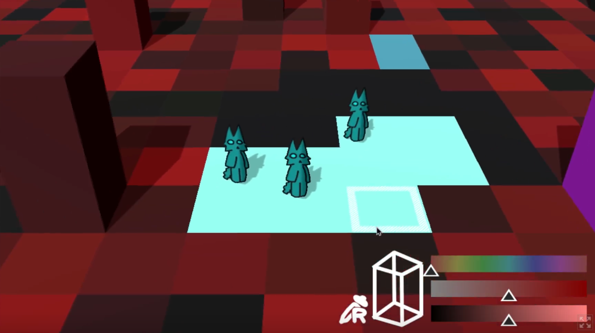
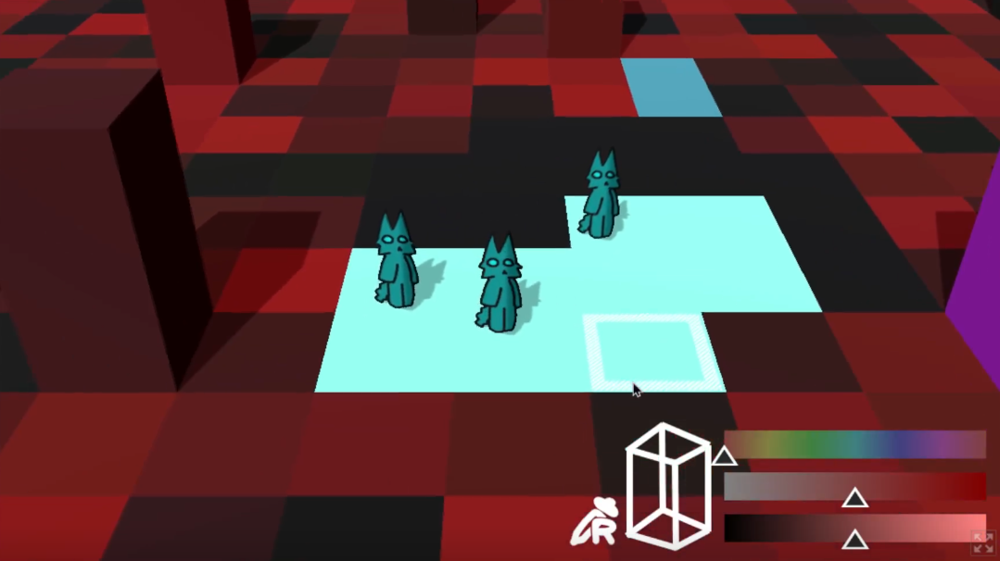

There was this game I was envisioning that I wanted to create. I wanted to make a prototype to see if I could manage the technicals. I just wanted to get it to a point where the multiplayer could work on the browser and with it working on mobile. I wanted players to be able to place and colour the world. Most of the game mechanics would be skipped, this was just to see if I could do the stuff I had never done before. It took me a while to make things happen, and I even had to implement mobile UI inputs myself since godot doesn’t have mobile interactions in its high level UI tools. Nearing the end, I cut the fact I wanted some basic combat and rushed a bit since I got the point across that I could do it and wanted to be done with it; the web server stuff was a nightmare for my first time. In the end, I made a cool chat room game with the ability to colour the world.
Fully networked tile‑placement game with chat; browser & mobile‑friendly. Everything was done by myself.
[The game is not available to be played, sorry]
 
